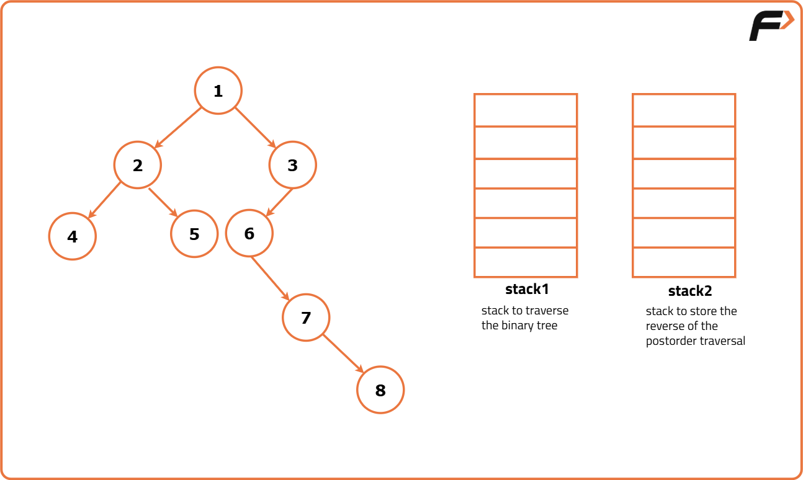
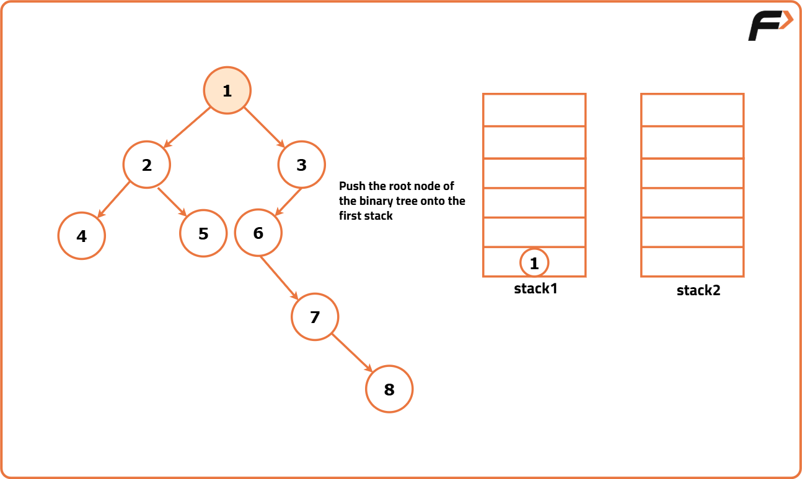
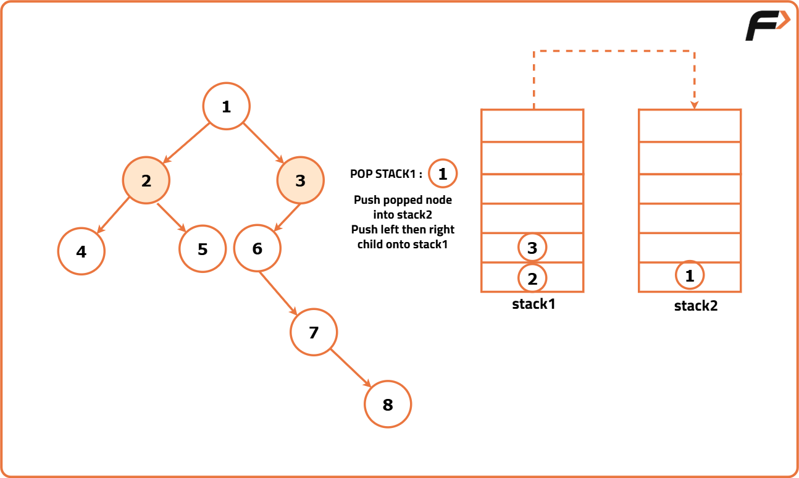
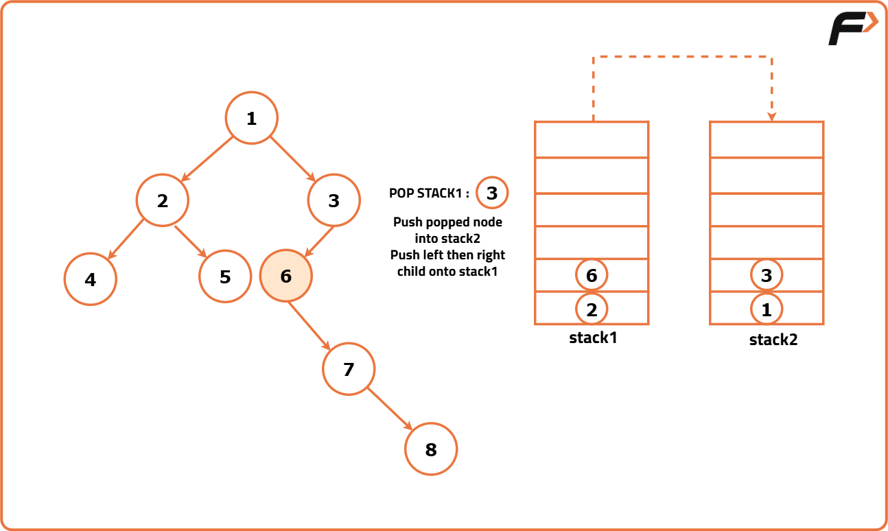
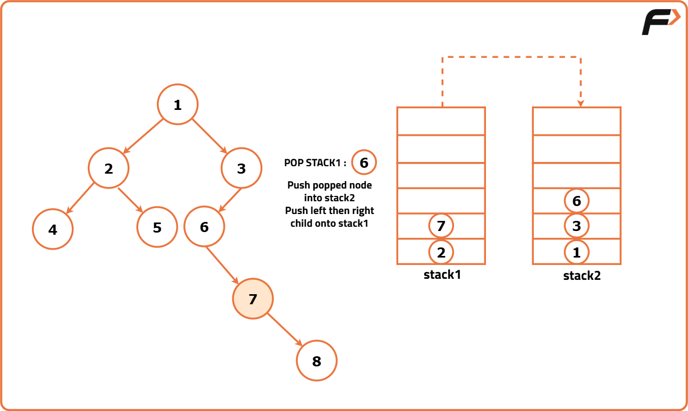
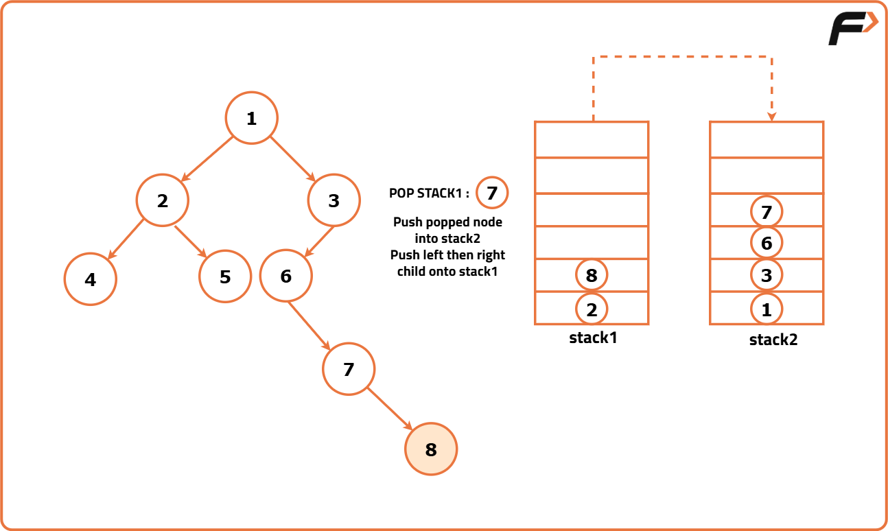
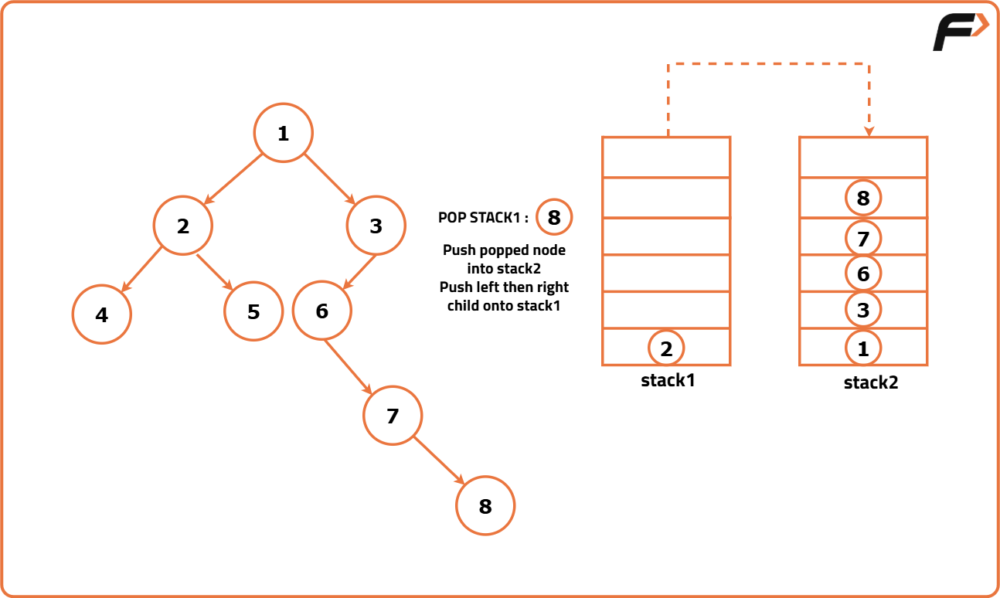
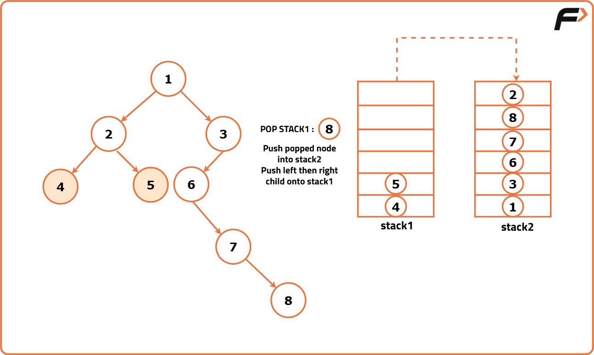
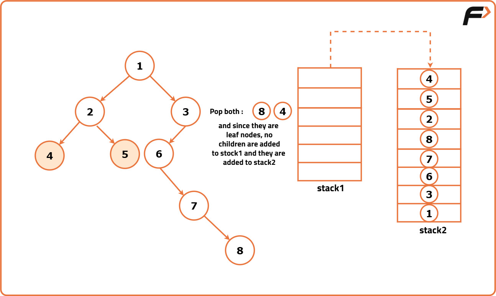

Iterative Postorder Traversal of Binary Tree Using 2 Stacks
Problem Statement: Given the root of a Binary Tree, create a function that performs a postorder traversal using two stacks and returns an array containing the traversal sequence.
Examples
Example 1: Input: Binary Tree: 4 2 5 3 -1 7 6 -1 9 -1 -1 8 -1 1 Output: [1, 9, 3, 2, 7, 8, 6, 5, 4] Explanation: We traverse the binary tree in the order of Left, Right, and then Root recursively. This results in the following traversal: 1 → 9 → 3 → 2 → 7 → 8 → 6 → 5 → 4. Example 2: Input: Binary Tree: 1 2 3 4 5 6 7 -1 -1 8 -1 -1 -1 9 10 Output: [1, 2, 4, 5, 8, 3, 6, 7, 9, 10] Explanation: We traverse the binary tree in the order of Left, Right, and then Root recursively. This results in the following traversal: 1 → 2 → 4 → 5 → 8 → 3 → 6 → 7 → 9 → 10.
Disclaimer: It's highly recommend trying to solve it before looking at the solution.
Approach
Algorithm
- Create two stacks: one for holding nodes and another for storing the final postorder traversal sequence. Initialize an array `postorder` to store the traversal sequence.
- Push the root node to the first stack.
- Process the nodes until the first stack is empty:
- Pop a node from the top of the first stack.
- Push this node onto the second stack.
- Push its left child (if it exists) onto the first stack.
- Push its right child (if it exists) onto the first stack.
- Once the first stack is empty, retrieve the nodes in the postorder sequence by popping nodes from the second stack one by one and store them in the postorder array.









Code
#include <bits/stdc++.h>
using namespace std;
// Node structure for the binary tree
struct Node {
int data; // Value of the node
Node* left; // Pointer to the left child
Node* right; // Pointer to the right child
// Constructor to initialize the node with a value
Node(int val) : data(val), left(nullptr), right(nullptr) {}
};
// Function to return the postOrder traversal of a binary tree using two stacks
vector<int> postOrder(Node* root) {
vector<int> postorder; // Vector to store the postorder traversal
// If the tree is empty, return an empty traversal
if(root == NULL){
return postorder;
}
// Two stacks for iterative traversal
stack<Node*> st1, st2;
// Push the root node onto the first stack
st1.push(root);
// Iterative traversal to populate st2 with nodes in postorder
while(!st1.empty()){
// Get the top node from st1
root = st1.top();
st1.pop();
// Push the node onto st2
st2.push(root);
// Push left child onto st1 if exists
if(root->left != NULL){
st1.push(root->left);
}
// Push right child onto st1 if exists
if(root->right != NULL){
st1.push(root->right);
}
}
// Populate the postorder traversal vector by popping st2
while(!st2.empty()){
postorder.push_back(st2.top()->data);
st2.pop();
}
// Return the postorder traversal
return postorder;
}
// Function to print the elements of a vector
void printVector(const vector<int>& vec) {
// Iterate through the vector and print each element
for (int num : vec) {
cout << num << " ";
}
cout << endl;
}
// Main function
int main()
{
// Creating a sample binary tree
Node* root = new Node(1);
root->left = new Node(2);
root->right = new Node(3);
root->left->left = new Node(4);
root->left->right = new Node(5);
// Getting postorder traversal
vector<int> result = postOrder(root);
// Printing the postorder traversal result
cout << "Postorder traversal: ";
printVector(result);
return 0;
}Complexity Analysis
Time Complexity: O(N), where N is the number of nodes in the binary tree. Each node is visited once during the traversal.
Space Complexity: O(H), where H is the height of the binary tree. The space is used by the stack to store nodes during traversal.